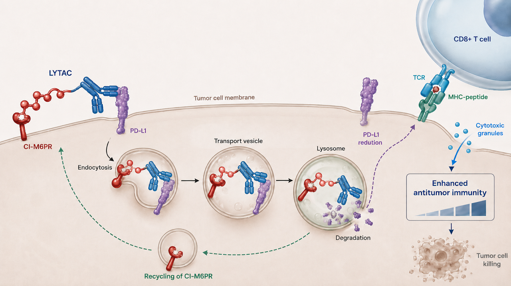
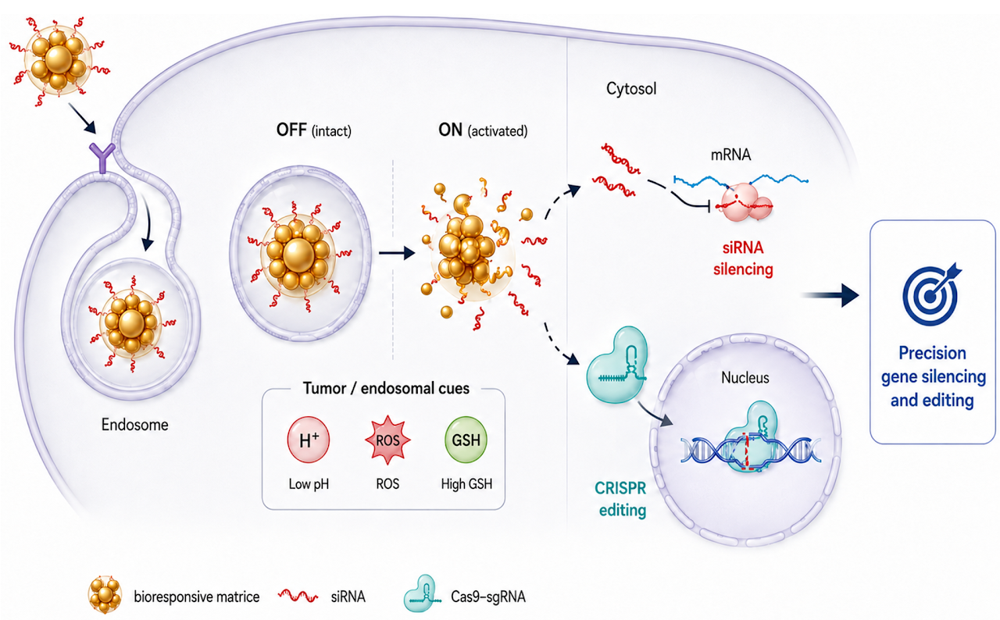
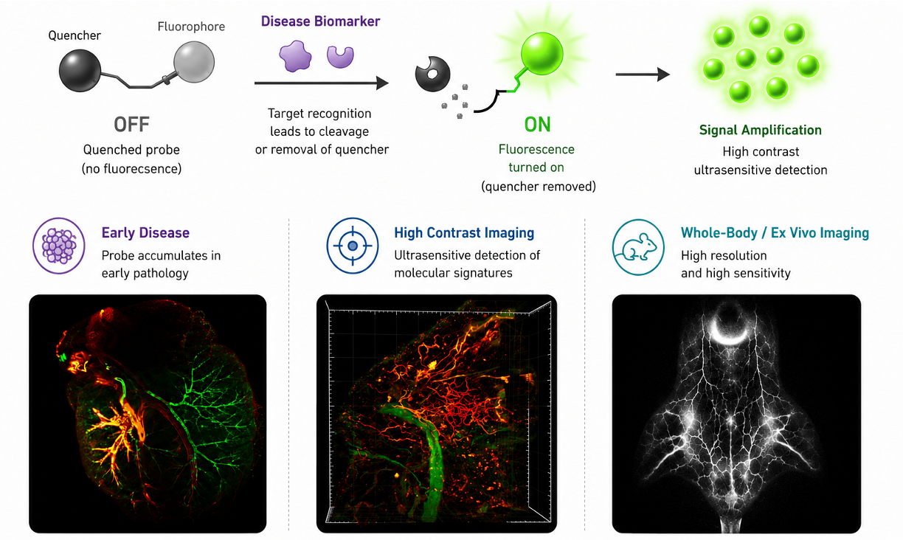

LYTACs as Next-Generation Therapeutics
Lysosomal targeting chimeras (LYTACs) represent a transformative therapeutic modality that harnesses endogenous lysosomal trafficking pathways to selectively degrade extracellular and membrane-associated disease proteins. Our laboratory aims to develop next-generation LYTACs that integrate tumor-selective targeting, bioresponsive activation, radiotheranostic functionality, and AI-guided design to eliminate previously undruggable targets and accelerate the clinical translation of protein degradation therapies for cancer and other diseases.

Bioresponsive Matrices for Targeted Gene Regulation
The full therapeutic potential of CRISPR genome editing and nucleic acid medicines depends on the ability to deliver genetic cargo safely, efficiently, and with precise spatiotemporal control. Our laboratory aims to develop bioresponsive delivery systems that activate therapeutic function only in response to specific biological or external cues, enabling highly selective intervention in diseased tissues while minimizing off-target effects. These programmable systems are expected to advance precision genetic medicine and offer new opportunities to treat inherited disorders, cancer, and chronic diseases.

Ultrasensitive Molecular Imaging for Early Diagnosis
Early detection is critical for improving disease outcomes, yet many pathological changes remain invisible to conventional imaging until advanced stages. We aim to develop ultrasensitive, activatable molecular imaging technologies that detect disease-associated biomarkers with high specificity. By integrating molecular probe engineering, NIR-II imaging, radiotracers, and AI-assisted analysis, we seek to enable early diagnosis, immune monitoring, and image-guided precision therapy.